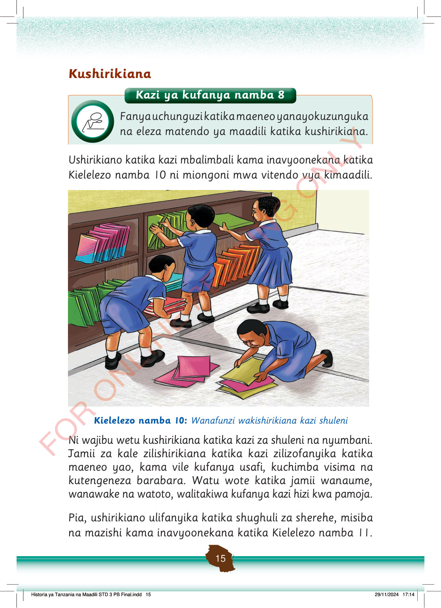

Kushirikiana
Kazi ya kufanya namba 8
Fanya uchunguzi katika maeneo yanayokuzunguka na eleza matendo ya maadili katika kushirikiana.
Ushirikiano katika kazi mbalimbali kama inavyoonekana katika Kielelezo namba 10 ni miongoni mwa vitendo vya kimaadili.
Wanafunzi wanne wanashirikiana kupanga mafaili kwenye rafu ya shule. Wengine wanaweka mafaili juu ya rafu na mwingine anayakusanya kutoka sakafuni.
Kielelezo namba 10: Wanafunzi wakishirikiana kazi shuleni
Ni wajibu wetu kushirikiana katika kazi za shuleni na nyumbani.
Jamii za kale zilishirikiana katika kazi zilizofanyika katika maeneo yao, kama vile kufanya usafi, kuchimba visima na kutengeneza barabara.
Watu wote katika jamii wanaume, wanawake na watoto, walitakiwa kufanya kazi hizi kwa pamoja.
Pia, ushirikiano ulifanyika katika shughuli za sherehe, misiba na mazishi kama inavyoonekana katika Kielelezo namba 11.